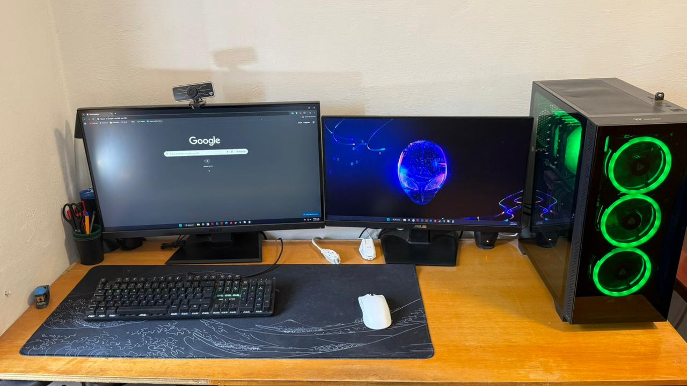
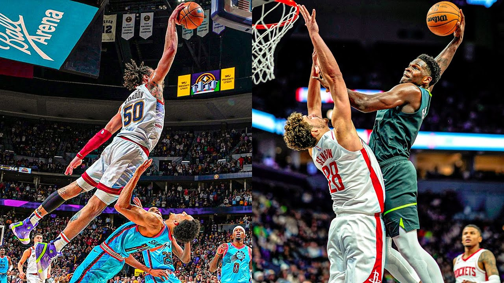
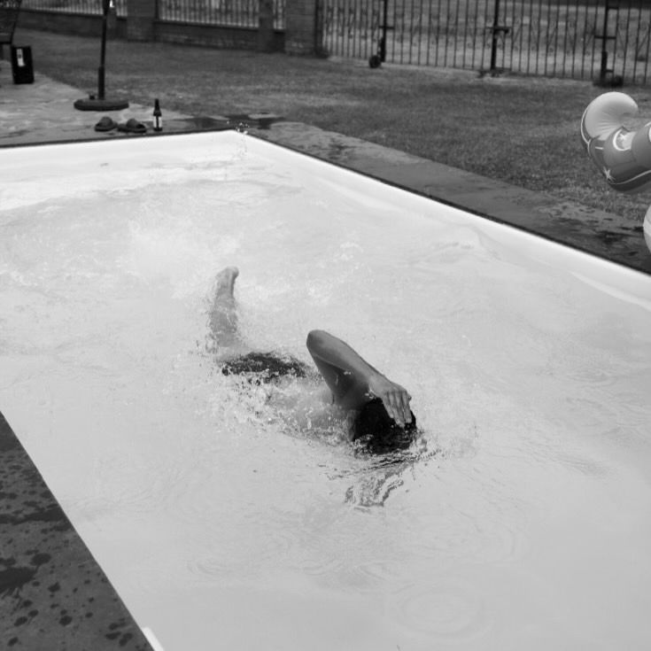

Bienvenido a mi espacio web personal. Aquí encontrarás acceso a mis archivos académicos, proyectos en desarrollo y áreas de interés técnico.
Cursando actualmente Introduction to Cryptography.

Apasionado por la optimización y ensamble de Computadoras.

Me gusta ver cualquier tipo de deporte, como básquetbol, fútbol, voleibol y fútbol americano.

Disfruto nadar cada vez que puedo, constancia y disciplina fueron la clave para aprender.
Presentado públicamente en 1977 por los científicos Ron Rivest, Adi Shamir y Leonard Adleman en el MIT (Massachusetts Institute of Technology), el algoritmo RSA transformó radicalmente las comunicaciones digitales al convertirse en el primer sistema viable de criptografía de clave pública o asimétrica.
A diferencia de los esquemas simétricos tradicionales que exigen compartir un secreto compartido de antemano, RSA introdujo un par matemático revolucionario: una **llave pública** para cifrar los datos (distribuible abiertamente) y una **llave privada** para descifrarlos (resguardada estrictamente por el receptor).
La fortaleza y seguridad del algoritmo radican directamente en la complejidad computacional de un problema matemático clásico: la **factorización de números enteros grandes** formados por el producto de dos números primos de gran extensión. Mientras que multiplicar dos primos extensos es una operación directa para cualquier ordenador, la inversa (encontrar dichos factores a partir únicamente de su producto) resulta virtualmente imposible en un tiempo razonable bajo la tecnología de cómputo actual, garantizando la confidencialidad y la autenticidad en los albores de la infraestructura de clave pública de internet (PKI).
Puedes contactarme a través de mi dirección de correo institucional:
emoral1900@alumno.ipn.mxESCOM - Instituto Politécnico Nacional